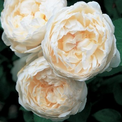
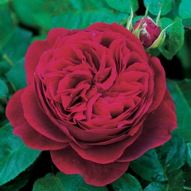

My Favorite Roses
-

Bears medium-sized, cupped blooms of an unusually rich, pure yellow.
There is a light Tea fragrance, with a cool violet character. It forms a
bushy, upright and vigorous shrub, with attractive, smooth green foliage.
-

Rose has the brightest crimson coloring of all the
English Roses; standing out when viewed from across the garden.
It is related to Mary Rose and has many of that rose's good garden qualities.
The blooms open wide and are slightly cupped. They are produced freely and
flower with remarkable continuity.